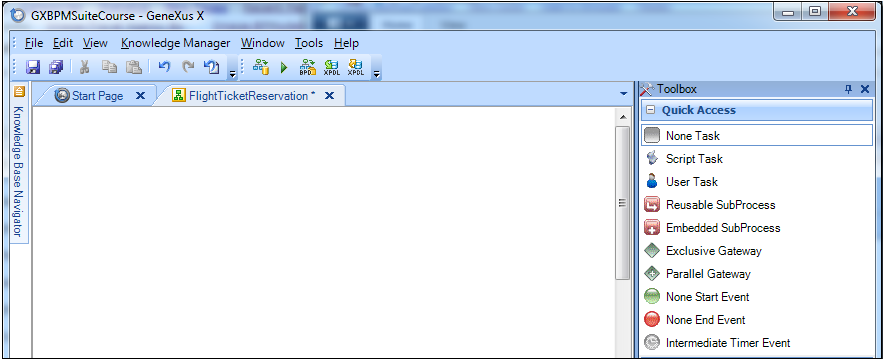

Creating an empty BPD using the Business Process Modeler
To create a Business Process Diagram object, first open the Business Process Modeler. To create a new project, we press the button labeled Create Knowledge Base: Then we give a name to the knowledge base and click on Create.
The development environment is opened, showing a start page:
To represent the process, we need to create an object of Business Process Diagram type: We see an empty canvas where we will add BPMN symbols, by dragging them from the toolbox shown at the right side.  Once inserted a symbol (e.g. a Start Event node), the modeler suggests through a contextual menu which symbol could be next.
|


| Backlinks |
| Modeling with GeneXus |